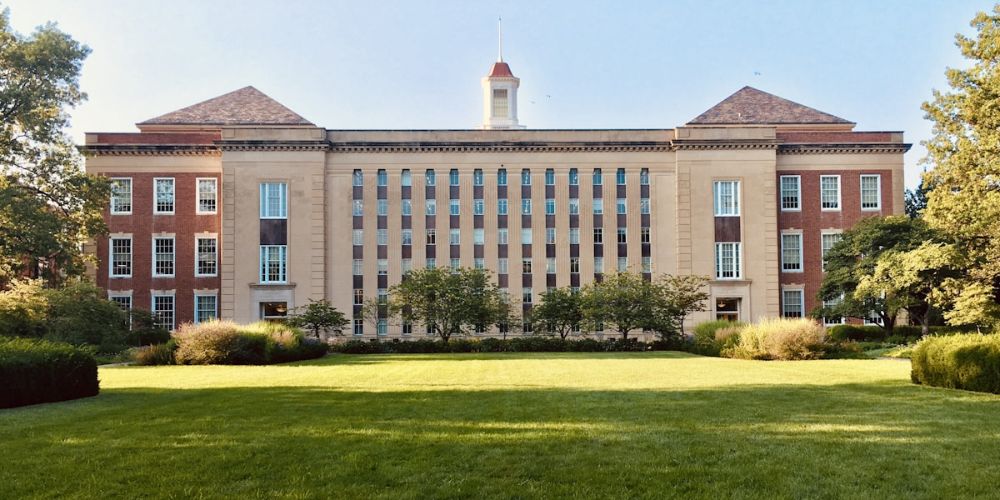

Education
Academic background, coursework & achievements

Core Computer Science
Introduction to Computer Systems
Digital logic, computer architecture, assembly language programming, memory hierarchy, caching, virtual memory, and operating system fundamentals. Practical experience with MIPS assembly and logic simulation.
HD – High DistinctionProgramming in the Large
Object-oriented design patterns, software architecture principles, UML modelling, unit testing with JUnit, version control with Git, and collaborative development methodologies in large-scale projects.
HD – High DistinctionAlgorithms & Data Structures
Advanced algorithm design techniques, graph algorithms, dynamic programming, greedy algorithms, computational complexity theory, NP-completeness proofs, and approximation algorithms for real-world problems.
D – DistinctionSoftware Engineering Project
Full-stack development in agile teams, CI/CD pipelines with GitHub Actions, RESTful API design, database schema design, cloud deployment with AWS, and production monitoring.
HD – High DistinctionMachine Learning & Artificial Intelligence
Statistical Machine Learning
Supervised learning (regression, SVM, decision trees), unsupervised learning (clustering, PCA), kernel methods, neural networks, cross-validation, bias-variance tradeoff, and ensemble methods.
HD – High DistinctionArtificial Intelligence
Search algorithms (A*, minimax), knowledge representation, probabilistic reasoning (Bayesian networks), reinforcement learning (Q-learning), Markov decision processes, and natural language processing.
D – DistinctionCapstone Project
DECO3801 — Design Computing Studio 3
A year-long capstone project where interdisciplinary teams design and deliver a substantial software product for an external industry client. Our team is developing a full-stack application using modern web technologies, following agile methodology with two-week sprints, client demonstrations, and production deployment.
Academic Achievements
Dean's List of Excellence
Awarded for achieving a GPA in the top 5% of the Faculty of Engineering, Architecture and Information Technology for two consecutive semesters.
UQ Summer Research Scholarship
Competitive scholarship awarded to undertake research in the NLP lab, focusing on text-to-speech accessibility tools for visually impaired students.
Faculty High Achievers Program
Invited to participate in the Faculty's High Achievers mentorship program, connecting top-performing students with industry mentors.